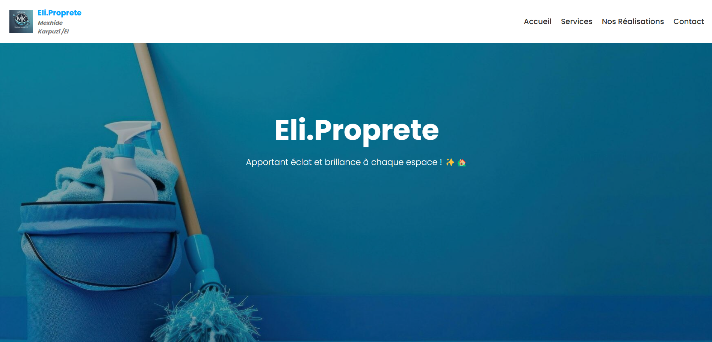
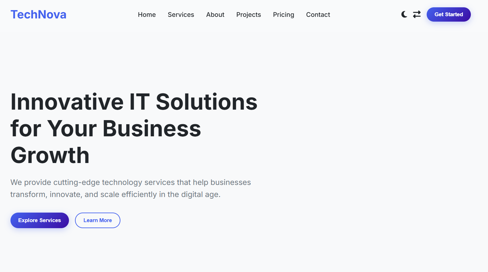

case studies
Featured work
Click any project to see detailed case study.

full‑stack / dashboard
Eli Proprete
Cleaning company website + admin dashboard: bookings, employee management, analytics.
View case study
corporate / multi‑language
V.Z Entreprenør
Oslo construction company. Fully responsive, project gallery, inquiry system.
View case study
e‑commerce / cart
BookStore
Product catalog, shopping cart, secure checkout (PHP/MySQL).
View case study

business / dashboard
Project 4
Modern business platform with real‑time data and reporting tools.
View case study
healthcare / management
Manual Physio
Clinic management dashboard: patient records, appointments, billing.
View case studyMore projects in progress
under the hood ⚙️